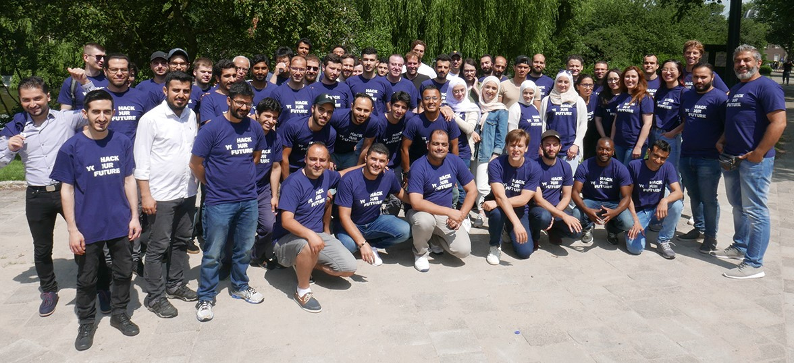
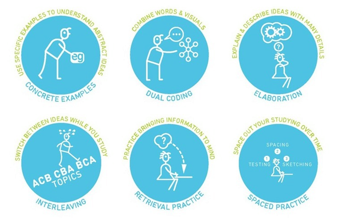

About Me
My name is Barbaros. I came from Istanbul-Turkey.
I was born at 1 November 1987 in Istanbul. So I am 31 years old.
Now, I am a refugee in Netherlands. I've been here for almost 4 months.
I live in Amsterdam with my family. I have a daughter at 3 years old.
I like swimming, hiking and watching movies.
My best motivation in my life is my family.
My Education Background
My first bachelor is in "Science Education" for Primary Schools".
I was graduated from Bogazici University in 2008 in Istanbul-Turkey.
My second bachelor is in "International Relations".
I was graduated from Hacettepe University in 2013 in Ankara-Turkey.
Nowadays I am studying at HackYourFuture-Amsterdam to become a coder.
My Work Experience
| Year | Company | Worktype |
|---|---|---|
| 2012 | Etiler Primary School - Istanbul | Science Teacher |
| 2013-2016 | Ministry of Interior of Turkey | Statistics Reporter |
| 2017 | Platinium Company - Istanbul | Computer Technician |
My HackYourFuture Life
After coming as a refugee to the Netherlands, I started searching in order to build a new carrier.
All refugees have to face with starting a second life. Fortunately, I see that situation as an opportunity.
To advance my next career, I have chosen IT sector. I believe that, one of the most prominent professions of time is Information Technologies. I love the way of life based on technology and especially computers.
In my opinion, one of the ways to persue a happy life is to do a profession that you love.
I believe in that I would satisfy myself by IT studies and works. Thus, I have chosen to shape my life in this route. My basic aim is to become a well-educated coder.
So, I have attended to Hack Your Future team.
I am able to learning the coding now via HackYourFuture.
...Click for enter to HackYourFuture Website...

Learning Strategies
To change something in your life, you need to change what’s going on in your inner mind. This is our subconscious mind.
Whether you want success, peak performance, or more respect in your career… whether you learn something new…
You must make changes, shifts, and enhancements to your inner life.
Learning Strategies have helped millions. These programs give us strategies, inspiration, and guidance for our nonconscious mind. so we experience noticeable results in our everyday learning.
There are many different ways about learning strategies.
For instance, you can click here for a good one.

My Favourite One
Yes, my favourite learning strategy is "SPACED PRACTICE". What is it actually?
Teachers often wait until the day before a test to review. When enough students score well on the test, it appears they have learned the material. But a few weeks later, most of that information has vanished from students’ minds. For more durable learning, the studying has to take place in smaller chunks over time.
Weinstein explains it like that : “Every time you leave a little space, you forget a bit of the information, and then you kind of relearn it. That forgetting actually helps you to strengthen the memory. It’s kind of counterintuitive, but you need to forget a little bit in order to then help yourself learn it by remembering again.”
In other words, repeat after learning again and again and again....